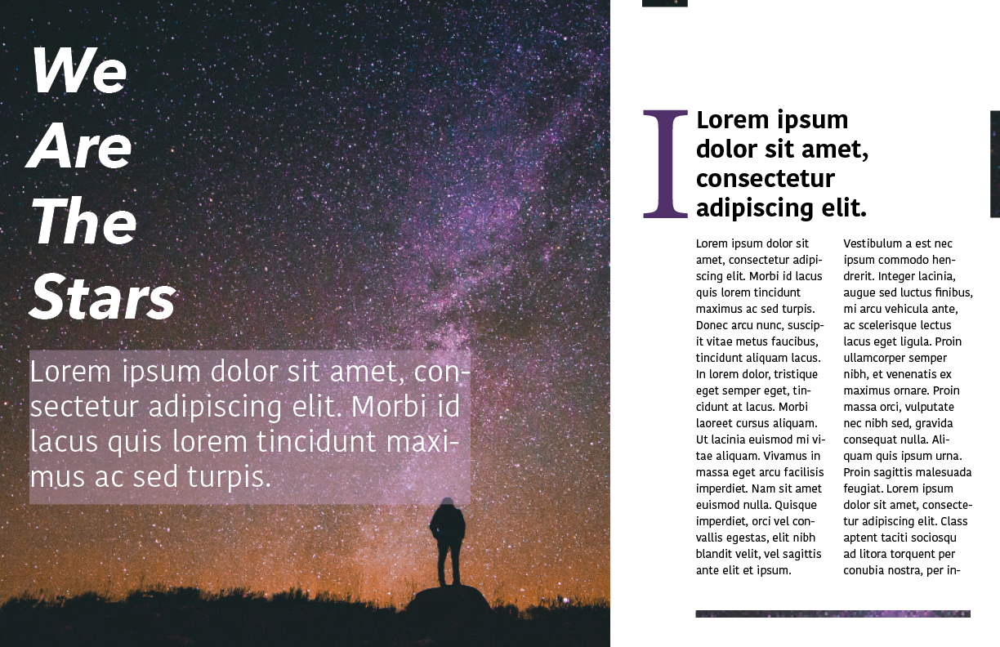
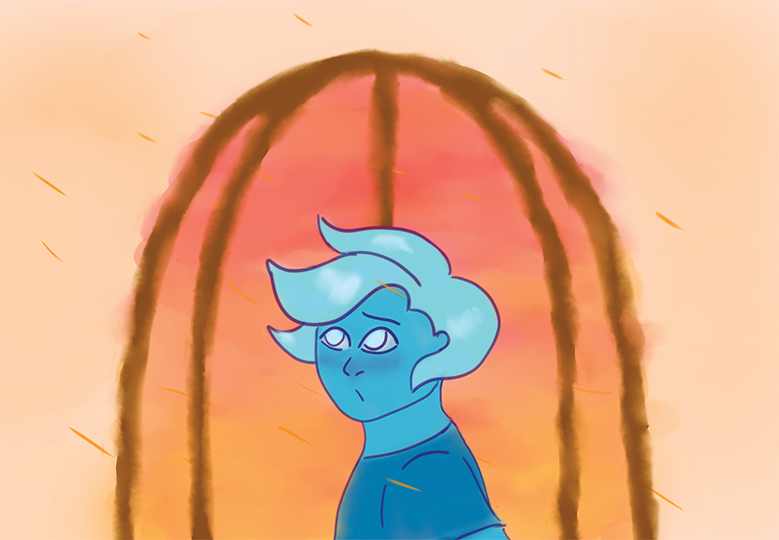
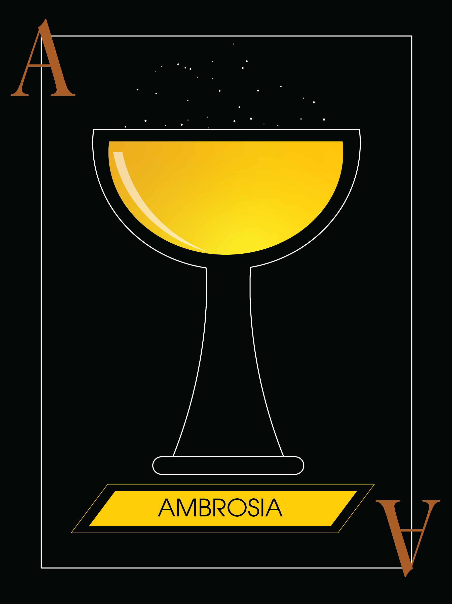

My name is Joelle Adeleke. This website was made to share some of the creative endeavors I've engaged in so far.
I have experience in:
With my design work, I hope to present a new designs and media that communicate effectively with your desired audience.
| Project Description | Image |
|---|---|
| This is a magazine page layout made in Adobe InDesign. |  |
| This is an illustration of a character, a ghost, made in Adobe Photoshop. |  |
| This is a greek mythology-inspired playing card, made in Adobe Illustrator. |  |
The ArenaValorie’s knife thudded into the thick wooden target for the third time in a row. Not quite a bullseye, but her aim was getting better. She threw two more knives in rapid succession and they did the same; hitting the target but not its center. Valorie rolled her shoulders back and clucked her tongue before pausing to tie her loose dark hair into a messy ponytail. Her time was limited. She could only spare a few more hours of this, and she just wasn’t improving enough… Afternoon sunlight trickled through the large, wide windows of the palace training room. The castle was alive this time of day. Servants gossiped as they passed through the hallways. The liveliness of the day wasn’t lost on Valorie. Half the kingdom must have heard about last night’s events. Of course onlookers would be thrilled by the dramatics of it all. Too bad Valorie wasn’t an onlooker. Her shoulder ached. Her fingers automatically furled into the fist, accustomed to the handle of a knife. “Again,” she chided herself. If no one would coach her, she would coach herself. She stormed over to the target board and removed the knives to drop them back into her knife bucket. It was definitely a hazard (she’d reached in the bucket without looking so many times she’d already taken mental note to wear silk gloves to hide the knicks on her hands) but she wasn’t sure where else to put them. And she definitely wasn’t going to ask for someone’s advice. “Greetings, Your Majesty.” Valorie flinched and spun around with her knife in hand, but dropped the defensive stance when she realized it was just her lady in waiting sinking into a deep curtsy. “Oh. Good afternoon.” Valorie dropped the knife back into the bucket. The older woman had laugh lines and her dull brown hair had streaks of gray (probably from all the stress Valorie had caused her over the years). She was about twenty years Valorie’s senior. She could be a refreshing breeze with light rain or hurricane. It was circumstances that determined which. “You’ve taken a keen interest in knives since last night,” Melodie noted. “You’ve been telling me since I was a kid to find ways to relieve stress.” Valorie offered a smile. “I’m just taking up a new hobby.” “Of course, dear. Just don’t be rash.” “I only make the most informed, calculated decisions.” Melodie sighed and hugged her.Valorie tensed at her touch, but after a few moments she returned the embrace. Tears threatened. She hadn’t realized how tense she’d been… “Sweetie… I know he means a lot to you. If you leave the knives alone… I’ll help you make sure he doesn’t get himself killed.” Valorie withdrew, a smile lighting up her eyes. “You’d do that?” “Of course, hun. Just leave the knives.” Valorie nodded, and with a shoulder rub, Melodie left the room. Valorie stared at the bucket of knives before leaving the room. An informed, calculated decision started brewing. She’d leave these knives. That didn’t mean she couldn’t get another. |
Helping Writers Become Authors
Email: janedoe@gmail.com
Phone: 555-123-4567